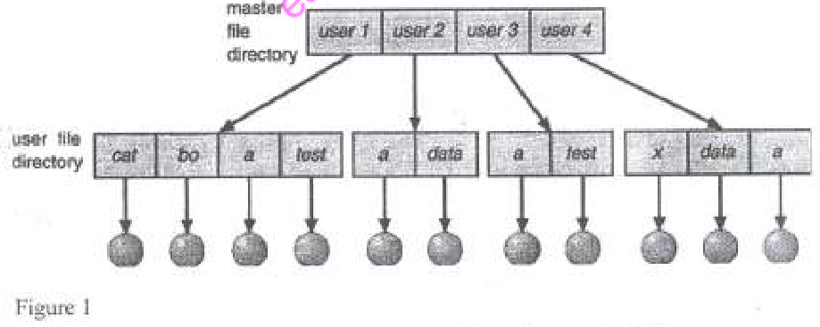
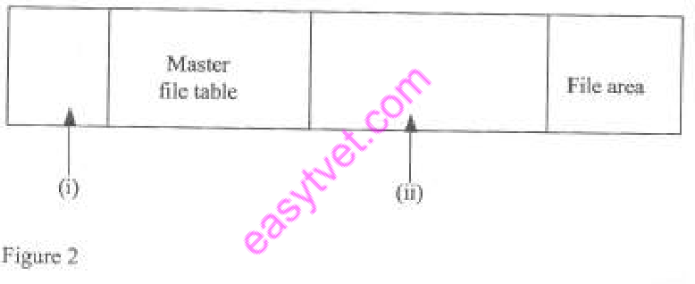
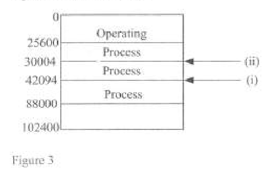

OPERATING SYSTEMS
Exam Code: 2920/105
Duration: 3 hours
Period: July 2015
(a) Outline three types of file sharing technologies that could be implemented in an operating system. Network File System (NFS): NFS allows file sharing across a network, primarily used in Unix and Linux environments. Server Message Block (SMB/CIFS): SMB/CIFS enables file sharing in Windows environments and is also compatible with other operating systems through Samba. Distributed File System (DFS): DFS aggregates file shares across multiple servers into a single namespace, providing a unified view of distributed files. (b) (i) Define the term cluster as used in file management. (i) Cluster: A cluster is the smallest unit of disk space allocation in a file system, comprising one or more contiguous sectors. It's the minimum amount of storage that can be allocated to a file, with file systems managing disk space in clusters rather than individual sectors. (ii) Operating system uses file allocation table to position files on a disk. Outline five desirable features of a good file allocation table. Efficiency in Disk Space Management: A good FAT should efficiently manage disk space by minimizing fragmentation and optimizing the allocation of clusters to files. Efficient space management ensures that disk space is utilized effectively, reducing wastage and maximizing storage capacity. Fast File Access and Retrieval: The FAT should facilitate fast file access and retrieval. It should enable quick lookups of file locations and efficient traversal of file clusters to minimize access time and improve file system performance. Fast file access is crucial for application responsiveness and overall system performance. Robustness and Reliability: A desirable FAT should be robust and reliable, ensuring data integrity and preventing file system corruption. Features like redundancy, error checking, and recovery mechanisms are important to protect the FAT structure and file metadata from failures, maintaining data integrity and system stability. Scalability to Handle Large Disks and Files: The FAT structure should be scalable to handle large disk volumes and a large number of files. It should efficiently manage increasing storage capacities and file counts without performance degradation. Scalability ensures that the file system can accommodate future data growth and remain efficient over time. Simplicity and Ease of Implementation: While being efficient and robust, a good FAT should also be relatively simple to implement and maintain. Simplicity reduces the complexity of file system design and development, making it easier to implement, debug, and manage. A simpler FAT structure can also reduce overhead and improve overall file system efficiency. (c) (i) Outline two disadvantages of memory fragmentation. Inefficient Memory Utilization: Memory fragmentation leads to inefficient utilization of memory. External fragmentation results in usable memory being scattered in small chunks, while internal fragmentation wastes space within allocated partitions. In both cases, memory is not used optimally, reducing the system's capacity to run more processes or handle larger datasets. Reduced System Performance: Fragmentation can degrade system performance. External fragmentation may lead to failure to allocate memory for new processes or require memory compaction, which is time-consuming. Internal fragmentation wastes allocated memory, reducing the effective memory available and potentially causing more swapping or paging, thus slowing down system operations. (ii) Differentiate between device controller and device driver as used in computer systems. Device Controller: A device controller is a hardware component (chip or circuit board) that manages and controls the physical operations of an I/O device. It acts as an interface between the I/O device and the system bus. The device controller handles low-level operations such as data transfer, device signaling, error detection, and device-specific protocols. It is responsible for the physical control of the hardware device and interacts directly with the device hardware. Device Driver: A device driver is a software component that enables the operating system to communicate with and control a specific hardware device. It acts as a software interface between the OS kernel and the device controller. The device driver translates generic OS commands into device-specific instructions that the device controller can understand. It handles device initialization, I/O request processing, interrupt handling, and device management functions. Device drivers abstract the hardware details and provide a uniform interface for the OS to interact with diverse hardware devices. Key Difference: The device controller is hardware that physically controls the I/O device, while the device driver is software that allows the OS to communicate with and manage the device controller and, thus, the I/O device. (d) Disk caching increases performance of a computer. Explain two ways used in disk caching to justify this statement. Reduced Disk Access Time: Disk caching reduces disk access time by storing frequently accessed data in a cache memory (RAM), which has much faster access speeds than hard disks or SSDs. When data is requested, the system first checks the disk cache. If the data is found in the cache (cache hit), it is served directly from the cache, avoiding the slower disk access. Serving more requests from the cache significantly lowers the average access time, improving overall system responsiveness and speed of data retrieval. Increased I/O Throughput: Disk caching increases I/O throughput by reducing the number of actual disk I/O operations. By serving read requests from the cache and buffering write operations in the cache (write-back caching), disk caching reduces the load on the disk subsystem. Higher cache hit rates mean fewer disk accesses are needed to satisfy I/O requests, allowing the disk subsystem to handle more I/O operations in a given time, thus increasing overall I/O throughput and system efficiency. 2. (a) (i) Outline three groups of I/O instructions used in computers. Control Instructions: Control instructions are used to control the operation of I/O devices. These instructions send commands to devices to initiate actions, set modes, or manage device functions. Examples include commands to start or stop a device, rewind a tape, or seek a specific track on a disk. They manage the behavior and state of I/O devices. Status Instructions: Status instructions are used to query the status of I/O devices. These instructions allow the CPU or operating system to check the current state of a device, such as its readiness, error status, or completion status. Status instructions are essential for device monitoring and error handling, enabling the system to check if a device is ready for data transfer or if any errors have occurred. Data Transfer Instructions: Data transfer instructions are used to transfer actual data between the CPU/memory and I/O devices. These instructions handle the movement of data for input and output operations. Examples include instructions to read data from an I/O port to memory or write data from memory to an I/O port. Data transfer instructions are the core of I/O operations, facilitating the exchange of data between the system and external devices. (ii) Most computer systems have implemented dynamic memory access. Describe the procedure used to transfer data from I/O devices in these systems. Procedure for Data Transfer from I/O Devices using Dynamic Memory Access (DMA): DMA Request: The I/O device initiates a data transfer by sending a DMA request signal to the DMA controller. This request indicates that the device has data to transfer to memory or is ready to receive data from memory. DMA Controller Setup: Upon receiving the DMA request, the DMA controller requests control of the system bus from the CPU. The CPU may grant the bus to the DMA controller after completing the current bus cycle. Data Transfer by DMA Controller: Once the DMA controller gains control of the bus, it directly transfers data between the I/O device and main memory without involving the CPU for each byte transferred. The DMA controller acts as the bus master, managing the data transfer process independently. DMA Completion and Notification: After the data transfer is complete, the DMA controller notifies the CPU via an interrupt signal. The CPU is then informed that the DMA transfer is finished and can resume processing or initiate further operations. This process offloads data transfer tasks from the CPU, allowing it to perform other computations concurrently. (b) Rosalina would like to design a file management system. Outline five objectives of the system that she should consider in the design. Meeting User Needs and Requirements: The primary objective is to design a file management system that effectively meets the needs and requirements of users. This includes providing functionalities for file creation, deletion, organization, sharing, and access in a manner that is user-friendly and efficient. User needs should drive the design and features of the file system. Efficient Data Storage and Retrieval: The file system should ensure efficient storage of data on storage devices and fast retrieval of files when needed. This involves optimizing disk space utilization, minimizing fragmentation, and implementing efficient algorithms for file access, directory operations, and metadata management. Performance in data storage and retrieval is crucial for system responsiveness. Data Integrity and Reliability: Maintaining data integrity and reliability is a critical objective. The file system must protect data from corruption, loss, and unauthorized modifications. Features like error detection and correction, data journaling, backup and recovery mechanisms, and robust metadata management are essential to ensure data integrity and system reliability. Security and Access Control: Implementing strong security and access control mechanisms is vital. The file system should provide features to control access to files and directories, ensuring data confidentiality and preventing unauthorized access. Access control should be flexible, allowing for permissions based on users, groups, and roles, and should protect against both internal and external security threats. Scalability and Adaptability: The file management system should be scalable to handle increasing data volumes and file counts as the system grows. It should also be adaptable to different storage technologies and evolving user needs. Scalability and adaptability ensure that the file system can meet current and future storage requirements and remain efficient and functional over time. 3. (a) Explain the semaphore as used in operating system. Semaphore Explanation: A semaphore is a synchronization primitive used in operating systems for controlling access to shared resources and coordinating process execution. It is an integer variable that can be accessed and manipulated through two atomic operations: wait (P) and signal (V). Semaphores help solve critical section problems and manage concurrency by controlling process access to shared resources, preventing race conditions and ensuring synchronized operations. (b) (i) Describe the term swapping as used in memory management. (i) Swapping Description: Swapping is a memory management technique where processes are moved between main memory (RAM) and secondary storage (disk) to manage memory and enable multiprogramming. When main memory becomes full or when a process is idle, the operating system swaps out inactive processes from RAM to disk (swap space) to free up memory. When a swapped-out process needs to run again, it is swapped back into RAM. Swapping allows more processes to be loaded and executed than physical memory can hold simultaneously, increasing the degree of multiprogramming. (ii) Outline four major storage levels that could be found in a memory hierarchy diagram. Registers: Registers are the fastest and most expensive level, located within the CPU. They hold data and instructions that the CPU is currently processing. Registers have very small capacity but offer the quickest access times. Cache Memory: Cache memory is a fast, relatively small memory located closer to the CPU than main memory. It stores frequently accessed data and instructions from RAM to reduce average memory access time. Cache memory is typically multi-level (L1, L2, L3), with increasing size and decreasing speed at each level. Main Memory (RAM): Main Memory (RAM - Random Access Memory) is the primary working memory of a computer system. It is faster and more expensive than secondary storage but slower and cheaper than cache. RAM holds the programs and data currently in use by the CPU and provides a balance between speed, cost, and capacity. Secondary Storage (e.g., SSD, HDD): Secondary Storage, such as Solid State Drives (SSDs) or Hard Disk Drives (HDDs), is the slowest and cheapest level, but offers the largest capacity. It is non-volatile and used for long-term storage of data, including the operating system, applications, and user files. Access times are significantly slower compared to RAM and cache. (c) Explain three ways in which a new process is created in an operating system. Process Creation by Parent Process (Forking): A new process can be created by an existing process, known as the parent process, using the fork system call. When a parent process forks, the operating system creates a nearly identical copy of the parent process, which becomes the child process. The child process inherits many attributes from the parent, but has a new process ID and starts executing independently. Forking is a common method for process creation in Unix-like systems. Process Creation by System Initialization (Bootstrapping): Some processes are created during system initialization or boot-up. When the operating system starts, it launches essential system processes that are needed for system functionality. These processes are typically created directly by the kernel as part of the boot sequence and are crucial for managing system resources and services. Examples include init process (in Unix-like systems) or system daemons. Process Creation by User Request (Command Execution): New processes are often created in response to user requests, such as when a user executes a command or starts an application. When a user types a command in a shell or clicks on an application icon, the operating system creates a new process to run the requested program. The shell or GUI acts as a parent process that spawns new processes based on user actions. This is the primary way user applications are launched. (d) Derrick was required to investigate several elements of a process control block. Outline four elements that he could have established. Process State: The PCB contains the current state of the process. This state indicates whether the process is currently running, ready to run, waiting (blocked), new, or terminated. The process state is dynamic and changes as the process executes and interacts with the system. Program Counter (PC): The PCB stores the Program Counter (PC) value for the process. The PC holds the address of the next instruction that the process is to execute. When a process is interrupted or switched out, the PC value is saved in its PCB so that execution can resume from the correct point later. CPU Registers: The PCB includes CPU registers. This section saves the current values of all CPU registers when the process is switched out. Registers hold temporary data and intermediate results that the process is actively using. Saving and restoring registers are essential for context switching to ensure correct process resumption. Memory Management Information: The PCB contains memory management information for the process. This includes details about the process's memory allocation, such as pointers to page tables or segment tables. This information is crucial for virtual address translation and memory protection, enabling the OS to manage the process's memory space effectively. 4. (a) Explain each of the following terms as used in operating system: (i) shell; (i) Shell: In operating systems, a shell is a command-line interpreter. It acts as an interface between the user and the operating system kernel. The shell takes user commands as input, interprets them, and executes them by making system calls to the kernel. It provides a command-line user interface (CLI) for users to interact with the OS, launch programs, manage files, and control system operations. (ii) thread. (ii) Thread: A thread is a lightweight unit of execution within a process. It is a single sequential flow of control within a program. Multiple threads can coexist within a process and share the same process resources, such as memory space and files. Threads enable concurrency within a process, allowing for parallel execution of different parts of a program and improving performance and responsiveness. (b) AXB Company Ltd. intends to install an operating system with a friendly user interface. (i) Identify the most appropriate type of operating system for the company justifying your answer. (i) Graphical User Interface (GUI) Based Operating System: The most appropriate type of operating system for AXB Company Ltd., focusing on a friendly user interface, is a Graphical User Interface (GUI) based operating system. GUI-based OSs like Windows, macOS, or Linux distributions with GUI environments (GNOME, KDE) are designed to be user-friendly and intuitive, providing visual interfaces with icons, menus, and windows. GUIs make computers accessible and easier to use for a broad range of users, especially those who are not technically expert. (ii) Outline four drawbacks that the company could realize while using the operating system identified in (i). Higher Resource Consumption: GUI-based operating systems typically consume more system resources (CPU, memory, disk space) compared to command-line or text-based OSs. GUIs require resources to render graphical elements, manage windows, and handle user interactions. This higher resource consumption can lead to reduced performance, especially on systems with limited hardware resources. Increased Complexity and Overhead: GUI-based OSs are more complex and have higher overhead. The GUI layer adds complexity to the OS kernel and system architecture. Managing graphical interfaces, windowing systems, and event handling introduces additional overhead, which can impact system performance and responsiveness, especially for low-end hardware. Security Vulnerabilities due to Complexity: The increased complexity of GUI-based OSs can introduce more security vulnerabilities. A larger codebase and more complex system architecture can increase the potential for bugs and security flaws. GUI components, windowing systems, and graphics drivers can be targets for security exploits, potentially increasing the system's attack surface. Less Efficient for Server Environments and Automation: GUI-based OSs are generally less efficient for server environments and automation tasks. Server environments often benefit more from lightweight, command-line oriented OSs that minimize resource overhead and are optimized for server functionalities. Automation and scripting tasks are typically more efficiently performed using command-line interfaces rather than graphical interfaces, which are designed for interactive user sessions. (c) (i) Explain the term dispatcher as used in operating systems. (i) Dispatcher: The dispatcher is the module of the operating system's scheduler that gives control of the CPU to the process selected by the short-term scheduler. It is responsible for the actual context switch, which involves saving the state of the previously running process and loading the saved state of the process to be executed. The dispatcher is invoked every time a process needs to be switched in or out of the CPU. (ii) Differentiate between block-oriented and stream-oriented I/O devices. Block-Oriented Devices: Block-oriented devices transfer data in fixed-size blocks or chunks. Data is accessed and transferred in blocks, and each block has a unique address. These devices typically support random access, allowing access to any block directly without needing to read through preceding data. Examples include disk drives (HDDs, SSDs) and tapes (in block mode). Block-oriented devices are suitable for storage and retrieval of structured data. Stream-Oriented Devices: Stream-oriented devices transfer data as a continuous stream of bytes or characters, without fixed block sizes. Data is accessed sequentially in a stream, and random access is generally not supported or efficient. Examples include keyboards, mice, printers, and network interfaces. Stream-oriented devices are used for character-based or byte-based data flow, typically for communication or sequential data processing. Key Difference: Block-oriented devices handle data in fixed blocks and support random access, while stream-oriented devices handle continuous streams of data and are primarily sequential access. (d) A lecturer described goals of I/O module during an operating system class. Outline four goals he could have mentioned. Efficiency: A primary goal of an I/O module is to achieve efficiency in I/O operations. The module should aim to maximize I/O throughput and minimize I/O latency, ensuring that data transfer between the system and external devices is performed quickly and with minimal overhead. Efficient I/O operations are crucial for overall system performance and responsiveness. Device Independence: Device independence is a key goal. The I/O module should provide a uniform interface to higher-level software layers (OS and applications), abstracting away the device-specific details of different I/O devices. This allows applications to work with I/O devices in a generic manner, without needing to be rewritten or modified for each specific device type. Device drivers handle device-specific operations, providing abstraction. Error Handling: Robust error handling is an essential goal. The I/O module should be able to detect and handle errors that occur during I/O operations, such as device failures, data corruption, or transmission errors. Error handling mechanisms should include error detection, error recovery, and error reporting to ensure data integrity and system reliability in the presence of I/O faults. Uniform Interface: Providing a uniform interface is a goal for simplifying I/O programming. The I/O module should offer a consistent and standardized set of system calls and APIs for applications to perform I/O operations. This uniform interface hides the complexities of device-specific control and allows programmers to interact with I/O devices in a simple, predictable, and device-independent way, improving programmer productivity and code portability. 5. (a) (1) Outline two memory placement algorithms. First-Fit Best-Fit (ii) Differentiate between short term and long term process scheduling. Short-Term Scheduling (CPU Scheduling): Short-term scheduling, also known as CPU scheduling, is the process of selecting one of the ready processes in memory to be executed by the CPU. It is invoked very frequently (milliseconds) whenever an event occurs that may lead to process switching, such as timer interrupts, I/O completion, or system calls. The main objective of short-term scheduling is to maximize CPU utilization and system throughput while minimizing response time and turnaround time. Short-term schedulers make fine-grained decisions about CPU allocation on a short time scale. Long-Term Scheduling (Job Scheduling): Long-term scheduling, also known as job scheduling, is the process of selecting processes from a job pool and loading them into memory for execution. It controls the degree of multiprogramming – the number of processes in memory. Long-term scheduling is invoked less frequently compared to short-term scheduling, typically when a process finishes or when system load changes significantly. Its primary objective is to control the number of processes in memory and balance the mix of processes (e.g., CPU-bound vs. I/O-bound) to optimize resource utilization and system performance over longer time scales. Key Difference: Short-term scheduling is for CPU allocation and is frequent, focusing on responsiveness and throughput. Long-term scheduling is for controlling the degree of multiprogramming and is less frequent, focusing on balancing process mix and resource utilization. (b) (i) Define the term spatial locality as used in memory management. (i) Spatial Locality: Spatial locality is a principle of locality of reference in memory management that refers to the tendency of a processor to access memory locations that are physically close to each other in memory. If a program accesses a particular memory location, it is likely to access nearby memory locations in the near future. Spatial locality is often exploited by cache memory and block-based data transfer mechanisms to improve memory access performance. (ii) Describe two limitations of dynamic memory partitioning schemes. External Fragmentation: External fragmentation is a primary limitation of dynamic memory partitioning. As memory is allocated and deallocated over time in variable-sized chunks, free memory becomes fragmented into small, non-contiguous blocks. Even if the total amount of free memory is sufficient to satisfy a memory request, it may not be possible to allocate a contiguous block of the required size due to fragmentation. External fragmentation leads to wasted memory space and reduced efficiency in memory utilization. Complexity of Memory Management: Dynamic memory partitioning schemes are more complex to manage compared to fixed partitioning. They require more sophisticated algorithms for allocation, deallocation, and tracking free memory blocks. Managing variable-sized partitions, searching for suitable free blocks, and handling fragmentation add overhead to the memory management system, increasing the complexity of OS implementation and potentially impacting performance. (c) Figure 1 shows a directory structure in a typical operating system. Use it to answer the questions that follow.  (i) Identify the directory structure depicted in the diagram justifying your answer. (i) Hierarchical (Tree-Structured) Directory Structure: The directory structure depicted in Figure 1 is a Hierarchical or Tree-Structured Directory Structure. This is justified by the presence of a master file directory (root-like directory) branching out into user directories (user 1, user 2, user 3, user 4), and further branching into user file directories (cat, bo, test, data, etc.) forming a tree-like hierarchy. This structure allows for nested directories, providing a clear and organized way to manage files and directories in a hierarchical manner, typical of modern file systems. (ii) Outline two advantages of the directory structure identified in (i). Improved Organization and Navigation: A hierarchical directory structure provides improved organization of files and directories. It allows users to group related files and directories logically under parent directories, creating a well-structured and easy-to-navigate file system. This hierarchical organization simplifies file management and makes it easier for users to locate and access files. Scalability and Manageability: Hierarchical directory structures are scalable and manage large numbers of files efficiently. The tree-like structure allows for creating subdirectories within directories, enabling the file system to handle a large volume of files and directories without becoming disorganized or unwieldy. Scalability and manageability are crucial for large-scale file systems and multi-user environments. (iii) Outline four typical directory operations that could be carried out in the directory structure identified in (c) (i). Create Directory: Creating a directory is a fundamental operation. Users can create new directories within existing directories to organize files and create a hierarchical structure. This operation allows users to structure their files and directories logically, improving organization and manageability. Delete Directory: Deleting a directory is used to remove a directory and its contents (files and subdirectories). This operation allows users to clean up and remove directories that are no longer needed. Deletion operations typically require appropriate permissions and may involve checks to ensure the directory is empty or to recursively delete contents. List Directory Contents: Listing directory contents is a common operation to view the files and subdirectories within a directory. This operation allows users to see what files and directories are present in a given location, aiding in navigation and file management. The listing typically displays file and directory names, attributes, and sizes. Rename Directory: Renaming a directory allows users to change the name of a directory. This operation is used to reorganize or update directory names for better clarity or consistency. Renaming a directory typically preserves its contents and structure but changes its identifier within the file system hierarchy. 6. (a) Figure 2 shows a NTFS volume layout diagram. Outline the function of the parts labeled (i) and (ii).  Based on a typical NTFS volume layout, assuming (i) points to the Master File Table and (ii) points to the File Area: (i) Master File Table (MFT): Part labeled (i) represents the Master File Table (MFT). The MFT is a core component of the NTFS file system. It is a database that contains metadata about every file and directory on the NTFS volume. For each file and directory, the MFT stores information such as file name, size, timestamps, permissions, data block locations, and attributes. The MFT is crucial for organizing and managing the entire file system structure and for locating and accessing files and directories. It acts as the central index and metadata repository for the NTFS volume. (ii) File Area: Part labeled (ii) represents the File Area. The File Area is the region on the NTFS volume where the actual data content of files and directories is stored. It is the largest part of the volume and occupies the majority of the disk space. When files are created and data is written, the actual file data is stored in clusters within the File Area. The MFT contains pointers (metadata) that map filenames and directories to the locations of their data within the File Area. The File Area is where the user and application data resides. Relationship: The MFT (i) stores metadata and indexing information, while the File Area (ii) stores the actual file data. The MFT provides the structure and pointers to locate and manage files within the File Area. (b) Most CPUs have interrupt requests for operating system's operations. Explain two types of such interrupt requests. Hardware Interrupts: Hardware interrupts are generated by hardware devices or peripherals to signal the CPU about an event that requires immediate attention. These interrupts are asynchronous events triggered by hardware components outside the CPU. Examples include interrupts from I/O devices (disk, network, keyboard), timers, and hardware failures. Hardware interrupts are used for timely handling of external events and device interactions. Software Interrupts (Traps): Software interrupts, also known as traps or system calls, are generated by software, typically by a running program, to request services from the operating system kernel. Software interrupts are synchronous events triggered by specific instructions within a program. They are used to invoke kernel-level functionalities, such as I/O operations, process creation, memory allocation, or inter-process communication. System calls are the primary way user-level programs request OS services. (c) With the aid of a diagram, describe contiguous file allocation method. Contiguous File Allocation Method Description with Diagram: In contiguous file allocation, each file occupies a set of contiguous blocks on the disk. This means that all disk blocks allocated to a file are physically adjacent to each other on the disk. The file system needs to know only the starting block address and the length (number of blocks) of the file to access it. Contiguous allocation is simple to implement and provides good performance for sequential file access. Diagram of Contiguous File Allocation: Description: Contiguous Blocks: Each file is allocated a contiguous set of disk blocks. For example, File A occupies blocks 1, 2, and 3, which are adjacent to each other. Directory Entry Information: The directory entry for each file stores the starting block address and the length (number of blocks) allocated to the file. For File A, the directory entry would store 'Start Block: 1, Length: 3'. Sequential Access Efficiency: Contiguous allocation is very efficient for sequential file access. Reading a file sequentially is fast because the disk head only needs to move from the starting block to the end block of the contiguous range. There is minimal seek time or fragmentation overhead for sequential reads. Direct Access Support: Direct (random) access is also relatively straightforward. To access block 'n' of a file, the system can calculate the physical block address by adding 'n-1' to the starting block address. However, direct access is still less efficient than sequential access as it may involve disk head movement to a specific block within the contiguous range. (d) (i) Juliet intends to procure an I/O device for her computer. Other than cost, outline four factors that she should consider when selecting the device. Performance (Speed and Throughput): Performance is a crucial factor. Juliet should consider the speed and throughput of the I/O device. For storage devices, this is measured in data transfer rates (MB/s or GB/s) and access times. For network devices, it's bandwidth. Higher performance devices improve system responsiveness and reduce bottlenecks. Compatibility: Compatibility with her computer system is essential. Juliet needs to ensure that the I/O device is compatible with her computer's interfaces (e.g., USB, PCIe, SATA), operating system, and drivers. Check for interface compatibility, OS support, and driver availability to avoid integration issues. Reliability and Durability: Reliability and durability are important for long-term use. Consider the device's build quality, Mean Time Between Failures (MTBF), and warranty. Reliable devices reduce the risk of device failures, data loss, and system downtime. Form Factor and Interface Type: Consider the form factor and interface type of the device. Ensure that the device physically fits into her computer (e.g., expansion slot, drive bay) and that the interface (e.g., USB, SATA, PCIe) is compatible with her system's ports and slots. Form factor and interface compatibility are essential for physical installation and connectivity. (ii) Solomon, a programmer with a certain company was required to explain the roles of clock software to a client. Outline four functions that he could have mentioned. Timekeeping and System Clock Management: Clock software is responsible for maintaining the system's time and date. It updates the system clock based on hardware clock ticks and provides functions to set and retrieve the current date and time. Accurate timekeeping is crucial for many system operations and applications. Scheduling and Time Slicing: Clock software, through timer interrupts, is used to drive process scheduling and time-slicing mechanisms. Timer interrupts at regular intervals allow the OS scheduler to preempt running processes and allocate CPU time to other processes, enabling fair CPU sharing and multitasking. Timer Services for Applications: Clock software provides timer services to applications. Applications can use timer APIs to set timers for specific events, schedule tasks at certain times, or implement delays and timeouts. Timer services enable applications to perform time-dependent operations and manage time-based events. Performance Monitoring and Profiling: Clock software is used for performance monitoring and profiling. High-resolution timers provided by clock software allow the OS and performance analysis tools to measure execution times of code segments, system calls, or processes. This timing information is essential for performance tuning, debugging, and identifying performance bottlenecks. 7. (a) (i) Explain the term linking as applied in memory management. (i) Linking in Memory Management: Linking in memory management is the process of combining different pieces of code and data together to form a single executable program that can be loaded into memory and run. It typically involves resolving symbolic references between different modules or object files, assigning memory addresses to code and data segments, and creating an executable file that the OS loader can load and execute. Linking is a crucial step in software compilation and execution. (ii) Differentiate between logical address and physical address as used in memory management. Logical Address (Virtual Address): Logical address, also known as a virtual address, is the address generated by the CPU during program execution. It is the address as seen by the process or program. Logical addresses are part of the process's virtual address space and are independent of the physical layout of memory. Programs use logical addresses to access memory locations, and these addresses are then translated to physical addresses by the MMU. Physical Address: Physical address is the actual address in physical RAM (main memory). It is the address that is used by the memory controller to access specific locations in physical memory chips. Physical addresses represent the real locations in RAM where data is stored. Logical addresses are mapped to physical addresses by the Memory Management Unit (MMU) using page tables or segment tables to enable virtual memory management. Key Difference: Logical addresses are program-view addresses that are virtual and translated, while physical addresses are hardware addresses in RAM and are real locations in memory. (b) Table 1 shows details of FCFS scheduling algorithm. Use it to answer the questions that follow. Table 1 (1) Calculate the wait time for each process labeled P0, P1, P2 and P3. (i) Wait Time Calculation for Each Process (FCFS): Completion Time Calculation (FCFS - First Come First Served): P0 completes at: Arrival Time + Service Time + Execution Time = 0 + 0 + 5 = 5 P1 completes at: Completion Time of P0 + Execution Time of P1 = 5 + 3 = 8 P2 completes at: Completion Time of P1 + Execution Time of P2 = 8 + 8 = 16 P3 completes at: Completion Time of P2 + Execution Time of P3 = 16 + 6 = 22 Wait Time Calculation: Wait Time = Turnaround Time - Execution Time Turnaround Time = Completion Time - Arrival Time Wait Time = (Completion Time - Arrival Time) - Execution Time = Completion Time - (Arrival Time + Execution Time) Wait Time for P0: 5 - (0 + 5) = 0 Wait Time for P1: 8 - (1 + 3) = 4 Wait Time for P2: 16 - (2 + 8) = 6 Wait Time for P3: 22 - (3 + 6) = 13 Wait Times: P0: 0 ms P1: 4 ms P2: 6 ms P3: 13 ms (ii) Calculate the average wait time for all the processes. (ii) Average Wait Time Calculation: Average Wait Time = (Wait Time P0 + Wait Time P1 + Wait Time P2 + Wait Time P3) / Number of Processes Average Wait Time = (0 + 4 + 6 + 13) / 4 = 23 / 4 = 5.75 ms Average Wait Time for all processes is 5.75 ms. (iii) Outline two advantages of FCFS scheduling algorithm. Simplicity: FCFS is simple to understand and implement. The algorithm is straightforward and easy to program, requiring minimal overhead for scheduling decisions. Fairness: FCFS is inherently fair as it processes jobs in the order of their arrival. Every process gets a chance to run, and there is no starvation. Processes are served based on their arrival sequence, ensuring equal opportunity for CPU access based on arrival order. (c) Risper was required to identify two types of memory fragmentations in operating systems. Explain two types that she was likely to have identified. External Fragmentation: External fragmentation occurs when total free memory space is sufficient to satisfy a memory request, but it is not contiguous. Free memory is scattered in small, non-adjacent blocks, making it unusable for allocating larger contiguous blocks, even when total free memory is adequate. This type of fragmentation is common in dynamic partitioning schemes. Internal Fragmentation: Internal fragmentation occurs when memory is allocated in fixed-size partitions or pages. If a process is allocated a partition or page that is larger than its actual memory requirement, the unused space within the allocated block is wasted. This wasted space inside the allocated block is internal fragmentation. It's common in fixed partitioning and paging systems. (d) Javesh Company Ltd. would like to implement a client-server operating system. Outline four benefits the company will derive from this decision. Centralized Resource Management: A client-server OS allows for centralized management of resources. Servers can manage shared resources like files, printers, databases, and applications, making them accessible to multiple clients. Centralized management simplifies administration, reduces redundancy, and improves resource utilization. Enhanced Security: Client-server architecture offers enhanced security through centralized security management. Security policies, authentication, and access controls can be implemented and enforced centrally on servers, providing better protection for sensitive data and resources compared to decentralized systems. Improved Scalability: Client-server systems are scalable. As the company grows, it's easier to scale server resources (e.g., upgrade servers, add more servers) to meet increasing demands. Client machines can be added without requiring significant changes to the overall system architecture, providing scalability for growing user bases and workloads. Facilitated Data Sharing and Collaboration: Client-server OSs facilitate data sharing and collaboration. Servers act as central repositories for data and applications, enabling users to easily access and share information, collaborate on projects, and access common resources. Centralized data storage and sharing improve teamwork and data consistency across the organization. 8. (a) Outline four reasons for implementing audit trail on a file system. Security Monitoring and Intrusion Detection: Audit trails enable security monitoring and intrusion detection. By logging file access attempts, modifications, permission changes, and other file system events, audit trails provide a record of activities that can be analyzed to detect suspicious or unauthorized actions. Security personnel can use audit logs to identify potential security breaches, intrusions, or policy violations. Compliance and Regulatory Requirements: Many industries and regulations require organizations to maintain audit trails for compliance purposes. Audit logs provide evidence of adherence to security policies, data protection regulations (e.g., GDPR, HIPAA), and industry standards. Compliance audits often rely on audit trails to verify that access controls and security measures are in place and effective. Accountability and User Activity Tracking: Audit trails enhance accountability and user activity tracking. By logging user actions on files and directories, audit trails provide a record of who accessed, modified, or deleted specific files and when. This improves accountability by allowing administrators to trace actions back to specific users, investigate incidents, and enforce user responsibility for file system activities. Troubleshooting and Forensic Analysis: Audit trails are valuable for troubleshooting system issues and conducting forensic analysis. In case of system errors, data corruption, or security incidents, audit logs provide a detailed history of file system events. This information can be used to diagnose problems, identify the causes of errors, and perform forensic investigations to understand the sequence of events leading to an incident or data loss. (b) Differentiate between kernel and user spaces as applied in operating systems. Kernel Space: Kernel space is the privileged memory area where the operating system kernel executes. It has direct access to system hardware and all memory. Code running in kernel space can execute privileged instructions and manage system resources. Kernel space is protected from user-level processes to ensure system stability and security. The kernel, device drivers, and core OS services reside and run in kernel space. User Space: User space is the non-privileged memory area where user applications and processes execute. Processes in user space have restricted access to system hardware and kernel memory. User-level code cannot directly execute privileged instructions or access protected memory regions. User space provides isolation and protection for user processes, preventing them from interfering with the OS or each other. Applications and user programs run in user space and interact with the kernel through system calls. Key Difference: Kernel space is privileged and for OS kernel execution with full hardware access, while user space is non-privileged and for user application execution with restricted hardware access, providing system security and stability. (c) (i) Outline two examples of resources required in process execution. CPU Time Memory (ii) Figure 3 shows memory registers in an operating system. Outline the memory register labeled (i) and (ii).  Based on Figure 3, and assuming typical memory register usage in an OS context, where (i) is associated with a lower memory address and (ii) with a higher memory address relative to "Process" label: (i) Base Register: Memory register labeled (i) is likely representing a Base Register. In memory management with segmentation or base-limit registers, the base register holds the starting physical address of a process's memory segment. It defines the beginning address of the memory region allocated to the process. In Figure 3, if (i) is at a lower address (30004) relative to the "Process" block, it could indicate the base address for that process's memory segment. (ii) Limit Register: Memory register labeled (ii) is likely representing a Limit Register. A limit register, used with a base register, specifies the size or limit of the memory segment allocated to a process. It defines the range of valid addresses that a process can access, starting from the base address. In Figure 3, if (ii) is at a higher address (42094) relative to the "Process" block and the base register (i), it could indicate the upper bound or limit of the memory segment allocated to that process. The range between the base and limit registers defines the process's valid memory space. Context: Together, base and limit registers are used for memory protection and segmentation, defining and enforcing the memory boundaries for each process. (d) Patricia was required to categorize computer I/O hardware. Describe three categories that she could have indicated. Human-Readable Devices: Human-readable devices are designed for interaction with human users. They facilitate input from and output to humans. Examples include keyboards and pointing devices (mice, touchscreens) for input, and monitors, printers, and speakers for output. These devices are characterized by their user-friendly interfaces and formats suitable for human perception and interaction. Communication Devices: Communication devices are used for communication between computer systems or networks. They enable data exchange over communication channels. Examples include network interface cards (NICs), modems, and wireless adapters. These devices facilitate networking, remote communication, and data transmission between computers, enabling distributed systems and network services. Storage Devices: Storage devices are used for persistent data storage. They provide non-volatile storage for data that needs to be retained even when the system is powered off. Examples include hard disk drives (HDDs), solid-state drives (SSDs), optical drives (CD/DVD/Blu-ray), and tape drives. Storage devices are used to store files, applications, operating systems, and user data for long-term retention and retrieval.1. (a) (3 marks)
Answer
1. (b) (i) (2 marks)
Answer
1. (b) (ii) (5 marks)
Answer
1. (c) (i) (2 marks)
Answer
1. (c) (ii) (4 marks)
Answer
1. (d) (4 marks)
Answer
2. (a) (i) (3 marks)
Answer
2. (a) (ii) (4 marks)
Answer
2. (b) (5 marks)
Answer
3. (a) (4 marks)
Answer
3. (b) (i) (3 marks)
Answer
3. (b) (ii) (4 marks)
Answer
3. (c) (6 marks)
Answer
3. (d) (4 marks)
Answer
4. (a) (i) (2 marks)
Answer
4. (a) (ii) (2 marks)
Answer
4. (b) (i) (2 marks)
Answer
4. (b) (ii) (4 marks)
Answer
4. (c) (i) (2 marks)
Answer
4. (c) (ii) (4 marks)
Answer
4. (d) (4 marks)
Answer
5. (a) (i) (2 marks)
Answer
5. (a) (ii) (4 marks)
Answer
5. (b) (i) (2 marks)
Answer
5. (b) (ii) (4 marks)
Answer
5. (c) (i) (2 marks)
Answer
5. (c) (ii) (2 marks)
Answer
5. (c) (iii) (4 marks)
Answer
6. (a) (4 marks)
Answer
6. (b) (4 marks)
Answer
6. (c) (4 marks)
Answer
Disk Blocks:
[ Block 1 | Block 2 | Block 3 | Block 4 | Block 5 | Block 6 | Block 7 | Block 8 | Block 9 | Block 10 | ... ]
+---------+---------+---------+---------+---------+---------+---------+---------+---------+----------+-----+
| File A | File A | File A | File B | File B | File B | File B | File C | File C | Free | ... |
+---------+---------+---------+---------+---------+---------+---------+---------+---------+----------+-----+
File A: Starts at Block 1, Length 3 Blocks (Blocks 1-3)
File B: Starts at Block 4, Length 4 Blocks (Blocks 4-7)
File C: Starts at Block 8, Length 2 Blocks (Blocks 8-9)
6. (d) (i) (4 marks)
Answer
6. (d) (ii) (4 marks)
Answer
7. (a) (i) (2 marks)
Answer
7. (a) (ii) (4 marks)
Answer
7. (b) (4 marks)
Process
Arrival time
Execution time
Service time
P0
0
5
0
P1
1
3
5
P2
2
8
8
P3
3
6
16
Answer
7. (b) (ii) (2 marks)
Answer
7. (b) (iii) (2 marks)
Answer
7. (c) (4 marks)
Answer
7. (d) (4 marks)
Answer
8. (a) (4 marks)
Answer
8. (b) (4 marks)
Answer
8. (c) (i) (2 marks)
Answer
8. (c) (ii) (4 marks)
Answer
8. (d) (6 marks)
Answer